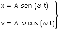
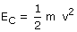
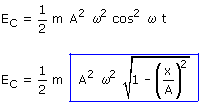
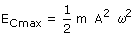
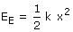
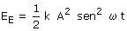
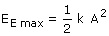
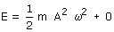
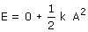
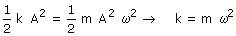

|
Energía
 Energía cinética:  Se puede expresar en función del tiempo o de la posición  La energía cinética es nula en los extremos (x = ±A) y máxima en el origen (x = 0)  Energía potencial elástica  También se puede expresar en función del tiempo  La energía elástica es máxima en los extremos (x = ±A) y nula en el origen (x = 0)  Energía de oscilación (Total
o mecánica)  En uno de los extremos la energía de oscilación vale:  Si no hay rozamiento la energía de oscilación es constante  La energía de oscilación es igual a la energía cinética máxima que a su vez es igual a la energía elástica máxima |